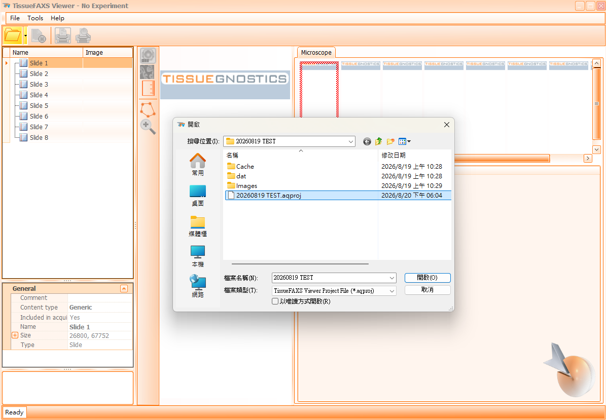
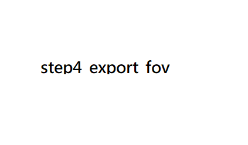
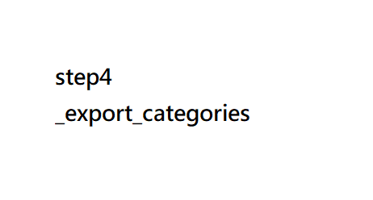

1 一、開啟檔案
步驟說明
於 TissueFAXS Viewer 資料夾中點選開啟 TissueFAXS Viewer 執行檔案（應用程式）。

▲ 圖 1-1：資料夾路徑與 TissueFAXS Viewer 執行檔標示
2 二、開啟檔案與選取 Region
1. File → Open
點選 File → Open... 選擇 OOO.aqproj 掃片檔案。
備註： 除備份檔案（
.BKP，系統備份可直接刪除）外，請勿更動內容檔案配置。

▲ 圖 2-1：開啟專案檔 (.aqproj) 與資料夾結構標示
2. 選擇欲處理的 region
滑鼠於左側清單目標 region 點擊兩次即可載入影像。

▲ 圖 2-2：雙擊左側清單載入指定 Region
3 三、功能鈕介紹
▲ 圖 3-1：頂部工具列功能配置圖
影像檢視縮放功能鈕
自訂縮放比例、100% 原尺寸 (1:1)、最佳觀察大小、全圖地圖顯示。
FOV 格線顯示
開啟或關閉 Field of View 網格邊界。
樣本範圍裁切顯示
顯示或遮罩樣本範圍外之區塊。
比例尺顯示
開啟右下角比例尺（例如 400 μm）。
4 四、影像轉檔 SOP
1. Export FOVs images（轉出單張或多張 FOVs 影像）
- 選擇紅色標記旗幟，於影像視窗中點選欲個別轉檔之 FOVs（點選出現主旗 1 個＋副旗 8 個，九宮格排列）。
- 點選
Export→Export FOVs images。 - 設定存檔位置、檔名結構與圖片格式；選擇 All／Flags Only／Flags With Neighbors 決定輸出範圍。
- 建議勾選
Apply Illumination Correction；可加上比例尺（無法指定大小）。 - 點選 Save 完成輸出。

▲ 圖 4-1：Export FOVs Images 設定對話框與旗幟標記
備註：FOVs 原始檔為 JPG；因包含拼接計算範圍，實際單張 FOVs 會比拼圖中顯示範圍稍大。
2. Export region overview – Export region（轉出單張完整拼接全圖）
- 點選
Export→Export region overview。 - Basic 頁面：設定存檔位置、格式（JPG／BMP／PNG／TIFF）及影像壓縮程度；建議勾選 Apply Illumination Correction。
- Advanced 頁面：可勾選 Scale bar（標記比例尺）與呈現 Subregions 框選範圍標示及面積。
- 確認 Results 中預估的照片長寬與檔案大小後，點選
Export。

▲ 圖 4-2：Export Region Overview 基本與進階設定
備註：合適大小範圍內建議使用 JPG 做轉檔；Tiff 轉檔之照片顯示範圍可能與原先不同，後續需自行裁切。
3. Export region overview – Export only overviews from categories（轉出指定圈選範圍拼接全圖）
- 點選
Subregions→Manage Categories，輸入組別名稱並選擇框選線條顏色（不同組可分開輸出拼圖）。 - 於
Subregions選單點選分組名稱，使用固定框選工具或手動框選工具（Add PolyLine）於照片上繪製區塊。
＊繪製時只能選擇及顯示單一分組名稱。 - 進入
Export region overview，選擇Export only overviews from categories，於 Advanced 頁選擇欲輸出的組別後匯出。

▲ 圖 4-3：圈選分組建立與特定區域全圖輸出